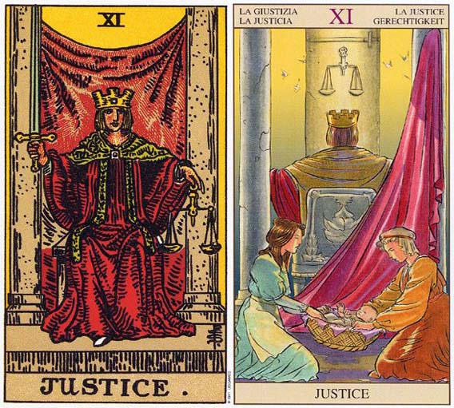

塔罗牌正义牌解释
塔罗牌_正义（Justice,XI）
概述
塔罗牌正义（Justice，XI）代表思索自身，并使自身到达和谐，维持正义和道德。
含义：均衡、性质相反。
优点：公正、中立、诚实、心胸坦荡、表里如一、协调者、光明正大的交往、感情和睦。
缺点：失衡、偏见、纷扰、诉讼、独断专行、问心有愧、表里不一、情感波折、无视社会道德的恋情。
塔罗牌正义牌概述：正义也可解释为谨守法规、解决某项争议，或签署法律文件。
这张牌有可能意指平衡有形的物质，或精神与物质的平衡。
这张牌中的皇冠和头发都是黄色的，代表一种清明的智慧，而红色的大衣表示身体的耐力，石柱象征我们精神信仰的强度。
这是一张天秤座的牌，天秤座应学习如何做出美好公平的决定，并且为目前处境负起责任，以及想清楚如何解决目前的问题。
塔罗牌解释之正义牌解释大全： 寓意：它维护正义，力求公平，透露出冷静且严厉的特质。虽然人人都想要生而平等，但却常常受到外来的偏见与利害的影响而有失公允。这张牌就在警示着我们，不论何时何地，都必需坚守着道德与正义，并且还要有宽容的心胸，不可有丝毫的懈怠。 正位解释 *平衡；光明正大；明理；重视道德；友好的态度；帮助弱者；和平；强烈的正义感。 *读书与玩乐均得心应手；全面性地努力；身兼数职；正常的判断。 *借贷金钱或物品；收支平衡；适度的运动与休息；亲近自然。 *绝对的爱情；不够深入；秘密公开；异性朋友；商量解决问题；脚踏两条船。 逆位解释 *偏袒；不公正；偏心；鲁莽的行动；对人过于严厉；战败；不平衡。 *工作或读书过度疲劳；无法休息；偏颇的判断；只读某个特定的科目。 *沉溺于爱情里；泛滥的爱情；不适合的对象；欲求不满；周围的反对；被发现脚踏两条船；被爱冲昏头。 *赤字；收支失衡；过度疲劳；运动过度引发关节炎。 倒立的正义 当正义倒立时，它暗示着不公不义。某个诉讼过程延宕不决；一项无止无休的正义或不协调；或是互相指责、推委责任。对于你的付出你还是会得到回报，或者说你仍可以收割到你的耕耘，只不过这不太可能会是个欢愉的收获。如果目前生命中出现了不公平或不美好的事物，或许正是你应该检视先前所播下之种子，并从中汲取教训的机会。 这可不是指望别人来教你的时刻，而是一个自救的时机。即使这张牌以倒立出现，因果循环的道理依旧不爽。你还是会受某人或某种状况的牵制，直到你洞悉并解决了先前的事端。当你留下一个悬而未决的状况，它（或与它类似的情形）会在你面前重复出现，直到你学到了教训。还没有收成的种子正等着你。倒立的正义象征，你对自己或其他人可能并不诚实。你并不愿意追踪现今事件的导因为何，而总是因你的窘境去责备他人。如果你如此怠惰的话，恐怕会丧失更深刻了解自己，以及人生的机会。
一看到这张牌就会想到占星学中「天秤座」，一个女人坐在厚重的石椅上，（跟国王的石椅一样，这是生命信仰的厚实所呈现的稳重力量），右手握着一把剑，她倾力将剑端朝上；左手则是一附天秤，她的任务就是维持天秤的平衡。
正义牌在维持公平之余，会利用手持的宝剑做出正当的决定跟责任。这是有制裁力量的「正义女神」，可以赏善罚恶。女神的皇冠上有一个宝石，这个在第三眼的位置象征女神有超凡的洞察力，看清真相之后，才会做出判决。
悬挂在两柱之间的紫色布幔，是内在精神力的象征。塔罗牌中的紫色代表「怜悯、慈爱」。所以这是一个慈悲的正义，付出多少，绝对会等值的回馈，正义女神不会让人失望。「种瓜得瓜，种豆得豆」是这张牌的意义，这种因果循环的状态，完成体现宇宙之中「命运之轮」的自然公平定律。
塔罗牌正义牌解释：正义牌与女教皇的区别
很多人都将塔罗牌中的正义与女教皇分不开，今天就来为大家对比塔罗牌中的正义牌与女教皇牌。
我们在探讨出生牌的时候，一定要注意要从能辨别、能看得见的牌面开始着手分析。“正义”与“女教皇”这两张牌的图面上是有很多相同之处可寻的。首先，她们两位都是安静地坐在各自的王位上。她们的坐姿虽然有所不同，可是给人的感觉都是稳稳地坐着，非常的宁静，貌似比较被动，却很有威严与很有气势的感觉。两张牌中的人物都以正面示人，她们坦然的坐姿和那直直注视着我们的眼神更是显象了她们的无惧与庄严。也许是因为两位人物都是坐着的，所以有着根深蒂固的意味，两者都缺乏行动与动力。 在这一对牌之间，它们掌管着无穷无限的秘密与智慧。而且在它们的面前，所有的事情都会被解释清楚和说明原因。在她们之间，也存在着一股很沉稳的能量。我们也很容易能体会到此组合的人会是很棒的思考者或者演说家，可绝对不是实践者！她们缺乏行动的动力与冲劲。不过，这两张牌的组合有着很完美的内容特质，此组合的人很擅长与内省与反省。 塔罗牌中的正义与女教皇对比 / 差别 在“正义”与“女教皇”之间也有着很多的不同之处。首先，“正义”的人物服装颜色是很鲜明、鲜艳的红色；这代表着此牌中响亮而清澈的感觉。主角人物坐在王座上有着无惧和坚定的神情。而同样是坐在宝座上的“女教皇”却有着让人感觉宁静、安详的蓝色着装。再者，我们观察一下她们的双手摆放。“正义”的人物一手握住宝剑，一手稳拿天秤；此姿态强烈并带有着些许紧张感。相反，“女教皇”的双手自主，放松和随意的摆放在自己的腿上。另外一个值得关注的细节是她们两者的头发颜色。“正义”中的人物头发颜色为金黄，在塔罗中此代表着主人翁的头脑清晰，并且她的注意力在当下此刻；可是，“女教皇”的头发是黑色的，在塔罗中此表现出她的脑海里都是隐藏着的奥秘。 互相协调的“正义 & 女教皇” 得以整合的“正义 & 女教皇”会交友甚广，朋友圈里往往存有不同背景和性情的人们。此组合的人群会被神秘学吸引，对于奥秘他们有着情不自禁的爱好。在生活中的很多方面此组合的人都会抱着完美的梦想。他们很喜欢陶醉在知识和完美层面的世界里。虽然两张牌中的人物都貌似很安静，可是此组合的人有着很强的语言能力。他们的力量一般会通过思考与言语来表达和传达。他们的声音、话语树立起两张牌中的权威。
塔罗牌正义牌解释：塔罗牌解释正义牌的星座守护神
天秤座（9月24日-- 10月23日）--正义
手 持天平是正义女神的形象,天平代表着公理与公正.天秤座的人天生就有协调与平衡的能力,能调整事物的平衡与界定标准.天秤座所在的第七宫是另一个秩序的开 始,就像每部法律的制定都标志着新规定的诞生和新局面的开展.天秤座的守护星是金星,具有爱美的天性和艺术天分.代表的个性是温柔、热情、优雅、迷人,情 感丰富,容易受感动.
金牛座（4月21日-- 5月21日)-- 主教
主教是世俗的 导师和神的代表,其主要象征是公牛,有着金牛座的厚道以及大智若愚的特性,也有着温和及稳健的个性,总是带给人们领导的方向与精神生活的崇高意志,使人不 知不觉地遵从他.金牛座的守护星是金星,具有爱美的天性和艺术天分.代表的个性是温柔、热情、优雅、迷人,情感丰富,容易受感动.
水瓶座（1月21日--2月19日）--星星
毁 灭之后,剩下的就是重建的希望跟光明的梦想,就如同挂在天边的星星,永远指引着人们前行的方向.受星星牌的影响,水瓶座带来了希望与梦想,第十一宫的人常 会有新奇独到的想法,为人生与未来开创新的希望.水瓶座的守护星是天王星,代表的个性是捉摸不定、善变,具有天生冲动的爆发力,以及创新的能力.
双子座（5月22日-- 6月21日)-- 恋人
恋 人象征着自由的灵魂,像双子座的孪生子一样,像征着完美无缺的结合,也代表着感情方面好的时候很好,纠葛起来,也没完没了,就好像自己和自己打架一样．双 子座人的守护星是水星,具有聪明的头脑和锐利的言辞.代表的个性是聪明、活泼、冲动,思虑敏锐,注意细节,容量冲动而陷入正在进行的事.
摩羯座（12月23日-- 1月20日）--恶魔
摩 羯座(也称山羊座)受到恶魔牌地影响,对于权力与欲望,有着无可救药的执着,天生对名利有着无比的渴望(成就,名望,欲望),同时也拥有恶魔般的知觉与洞 察力.另一方面,恶魔也代表着人类堕落的本性,以及人类劣根性的一面.摩羯座的守护星是土星,具有总冷静的头脑和坚强的毅力,影响人生的方向和使命感,也 是万物的基础、秩序和责任的来源.代表的个性是固执、不易妥协,意志力与毅力坚强,主观,重视纪律和权威.
天蝎座（10月24日-- 11月22日）--死神
当死神出现时,就代表着陈旧与破败的事物已经为社会本身带来了不良的影响.当邪恶,破败累积到一定程度的时候,就代表着完结的时刻即将到来.这一特性与天蝎座的特性及其相似.天蝎座的守护星是冥王星,代表的个性是刚毅、敏感,直觉力强,观察力敏锐,感情强烈.
狮子座（7月24日-- 8月23日）-- 力量
" 不畏艰难,我以烈火焚烧我的敌人;不怕没有援助,我用双手撕裂威权猛狮."无止境的活力和坚强的意志力是狮子座的最大特点,他们一生都在追求力量,就像狮 子一样,永远都想统治大地.力量对狮子座的人来说有很多涵义:活力,热情,爱恨分明,才华出众,惹人注目,这些狮子座人所追求的．狮子座的守护星是太阳, 太阳提供光和热,是创造力和力量的来源,所影响的个性是坦诚、率直外向、活跃、热情、善于表达自己、喜欢指挥、控制、影响别人.
射手座（11月23日--12月22日）--节制
受 到节制牌的影响,射手座(也称人马座)人变得喜好哲学与宗教,他喜欢不受拘束,自由自在的感觉.射手座人的热情表现在研究与学习上,孜孜不倦的致力于知识 的交流和融合,并同时追求心灵的稳定与超脱.射手座的守护星是木星,影响智力、潜能发展及生活方式,代表的个性是乐观、愉快,凡事朝正面思考;充满智慧, 善于解决问题;喜欢阅读和旅行,注重生活品质.
白羊座（3月21日-- 4月20日）--皇帝
皇 帝这张牌,代表的主要象征就是大公羊,它象征白羊座的支配力和古老的力量.皇帝这张牌常常伴随着白羊座的出现,代表着一切世俗权利的掌握与最顶端自我的控 制.代表着第一个成功与名声的开展,同时也代表着白羊座野心的展现。白羊座的守护星是火星,具有凶猛、暴力和英雄气概.代表的个性是雄心勃勃,喜冒欢险、 开拓、接受挑战,担任领导者;成功欲望很高,富有侵略性,不顾一切追求自己的目标.
巨蟹座（6月22日-- 7月23日）-- 战车
战 车这张牌代表着心灵的进化,正是喜欢对抗命运的巨蟹座人的象征,也符合巨蟹座人有责任感,敢于面对巨大的挑战的个性.另一方面由于水相星座的影响,战车这 张牌子和巨蟹座人都有情绪化的一面．巨蟹座的守护星月亮,月亮影响潮汐,牵动人类的情绪,代表梦和潜意识以及情感的力量.所影响的个性是敏细心内向,情绪 起伏很大,富有同情心,善于和他人合作．
双鱼座（2月20日-- 3月20日）--月亮
双 鱼座人受到月亮潮汐的影响,情感的低潮与高潮会交替出现，而浑浊不堪的潮水令双鱼座人看不清自己的样貌，而潮汐也会带来深海中隐藏的敌人.所以在月亮的影 响下，双鱼座人变得让人捉摸不定,众而产生一种神秘的美感．双鱼的座的守护星是海王星,代表的个性是有丰富的想像力，充满梦想和创意,空易吸引、感染和影 响别人，月亮代表恐惧和憔虑,她们是来自夜晚最黑暗的地方，月亮也代表幻想,月光下,我们很容易迷失方向，
处女座（8月24日-- 9月23日)-- 隐士
一 步一个脚印的寻找,是隐士的人生话题,透过双手的实践和身体力行,隐士寻找到属于他的经验与成就,通过学习,隐士寻到属于他的智慧与力量.追求真谛,正是 处女座永恒不变的理想.所以开化认知启蒙是隐士的强项.处女座的守护星是水星,具有聪明的头脑和锐利的言辞.代表的个性是聪明、活泼、冲动,思虑敏锐,注 意细节,容易冲动而陷入正在进行的事.
塔罗牌正义牌解释：塔罗牌正义的代表
一起来了解下塔罗牌正义牌解释之塔罗牌每月正义的代表：
每月11日-正义
塔罗牌大阿卡那的第11张是“正义”。牌面坐着一位安详的女性，一手拿天平、一手拿宝剑。她提醒我们遵循整个宇宙的规律，只要我们坚持正道，生活就能维持平衡与和谐。这张牌正立时代表正直、公平、诚实的和纪律。倒立时则暗喻消极、疏远、惧怕创新以及不满。
每月5日-教皇
塔罗牌大阿卡那的第5张是“教皇”，他是神圣、神秘事物的解释者，象征人类的认知及信仰。教皇的知识充满奥秘，即使抽象的事物也受它主宰。牌面正立时，表示信心十足、不疑不虑及对事物有正确理解力。牌面倒立则是爱说教、唱高调以及独断。
每月31日-皇帝
塔罗牌大阿卡那的第4张是“皇帝”，他力量的主要来源是智慧，并以此统治世间万物。皇帝的地位至高无上，他的权威不容质疑。牌面正立时，代表坚强的意志和稳固的能量。当牌面倒立时，就表示任性、暴虐和残忍。
每月27日-隐士
塔罗牌大阿卡那的第9张是“隐士”，他提着一盏灯、拄着拐杖，代表冥想、孤立与寂静，象征智慧的结晶及绝对的纪律。隐士是严厉的导师，他运用良心使人走上正途。牌面正立时，代表有所坚持、有目标、深沉且专注。牌面倒立表示专断、不易原谅他人、多疑以及气馁
每月8日-力量
塔罗牌大阿卡那的第8张代表“力量”，图牌中画着一位优雅的皇后，正在驯服一头愤怒的狮子。皇后象征女魔法师，可以驾驭不易控制的能量，并代表道德及体能上的优越力量。这张牌正立时，代表个人的魅力以及追求成功的决心。倒立时则暗喻自满和滥权。
每月25日-战车
塔罗牌大阿卡那的第7张是“战车”，牌面上的胜利者以一种强而有力的姿态，展现他在人世间的丰功伟业。这张牌可以解释成：不论正道多么艰险难行，你都得继续走下去。牌面正立代表成功的、有才能的和有效率的。若牌面倒立则暗示专制的态度和拙劣的方向感。
每月30日-皇后
塔罗牌大阿卡那的第3张是“皇后”，象征有创造力的聪明才智。她是达到极致的完美女性，是孕育大地的母亲，也是我们梦想与渴望的化身。当牌面正立时，这张牌代表魅力、优雅与毫不保留的爱。当牌面倒立时则有自负、矫情及无法容忍缺陷的意思。
每月20日-审判
塔罗牌大阿卡那的第20张是“审判”。这张牌鼓励当事者抛开物质上的束缚，寻求更高境界的灵性生活。牌面的图案是吹着号角的天，象征负有重任的崭新的一天。这张牌正立时具有超越自我、发掘无穷潜力的正面特质。倒立时则引喻号角声多半报喜不报忧，容易沉溺在欢乐的追逐中，并且缺少面对忧伤的能力。
每月19日-太阳
塔罗牌大阿卡那的第19牌“太阳”，可说是所有牌中最好的一张。它象征知识、活力和幸运，也代表值得受人尊敬和回报。这张牌正立时，具有清澈、人际和谐及美好的名声等等正面特质。牌面倒立时，则有骄傲、自负、虚伪等不利反面特性。
每月24日-恋人
塔罗牌大阿卡那的第6张是“恋人”，这象征透过两性结合的“爱”，能使全人类团结在一起。牌面正立时，这张牌代表道德、美学以及肉体上更高层次的感情与渴望。倒立时，则代表欲求不满、多愁善感和迟疑不决。
每月18日-月亮
塔罗牌大阿卡那的第18张是“月亮”，主要代表梦境、情感和潜意识的世界。传统上，月亮的形象是女性的力量和情感的化身。因此，牌面正立时的意义是敏感、体谅与感同身受。牌面倒立则表示情感上的顺从、被动的缺乏自我。
每月3日-皇后
塔罗牌大阿卡那的第3张是“皇后”，象征有创造力的聪明才智。她是达到极致的完美女性，是孕育大地的母亲，也是我们梦想与渴望的化身。当牌面正立时，这张牌代表魅力、优雅与毫不保留的爱。当牌面倒立时则有自负、矫情及无法容忍缺陷的意思。
每月16日-高塔
塔罗牌大阿卡那的第16张是“高塔”，画面上国王人雷击的高塔上摔下来，而建塔者则被一拳打中头部死去高塔不只象征现实事物的暂时性，也代表了人际关系和职业的变动性；而这些改变又往往是突然且迅速的。这张牌正立时显示能接受挫折，勇敢克服持久战。倒立时则代表得意忘形、自作自受以及沉迷在虚幻不实的想象中。
每月15日-恶魔
塔罗牌大阿卡那的第15张是“恶魔”。由于受到强烈的性吸引、非理性与热情的影响，使这张牌呈现交错的恐惧与欲望。魔鬼利用人对安全和金鱼的需求，透过人性的矛盾，使人们成为他的奴隶。这张牌积极的一面代表了感官的魅力和热情的表达。但同时牌的反面也提醒我们即使肢体上受到束缚，精神上还是可以自由翱翔。
每月21日-世界
塔罗牌大阿卡那的第21张是“世界”，牌面上有一位女神手持权杖在奔跑，她拥有无尽的力量，穿越全世界以展示真理。这张牌表示，在这个星球上没有什么是得不到的。这张牌正立时的解释是报酬优厚、人格正直。牌面倒立时则指出巨大的障碍、精神涣散以及自怜的性格。
每月23日-教皇
塔罗牌大阿卡那的第5张是“教皇”，他是神圣、神秘事物的诠释者，象征人类的认知及信仰。教皇的知识充满奥秘，即使抽象的事物也受它主宰。牌面正立时，表示信心十足、不疑不虑及对事物有正确理解力。牌面倒立则是爱说教、唱高调以及独断
每月10日-命运之轮
塔罗牌大阿卡那的第10张是“命运之轮”，象征时运的逆转，除了变动本身，世上并没有真正恒常不变的真理。这张牌显示了喜欢赌博的倾向，它会使生命因此起伏不定。事实上，人生不管成功或失败都与命运之轮紧紧相系；所以，生命中的成败输赢都不会是永久固定的。
每月17日-星星
塔罗牌大阿卡那的第17张是“星星”，画面上是一位赤身裸体的少女，在星空下一边把清新的池水浇灌在焦干的土地上，同时用另一枝榴子使死水复苏。她代表世间生命的光荣，但也代表了受物质与感官的奴役。因此，天空的星星永远在提醒她：别忘了还有一个更高层次的精神世界存在。